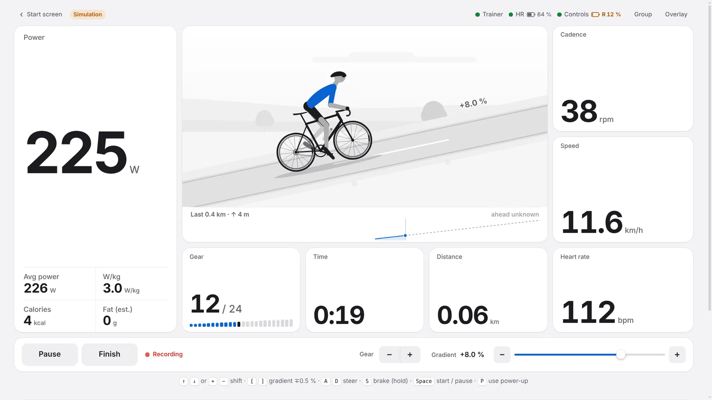
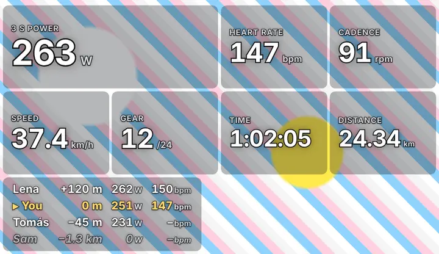
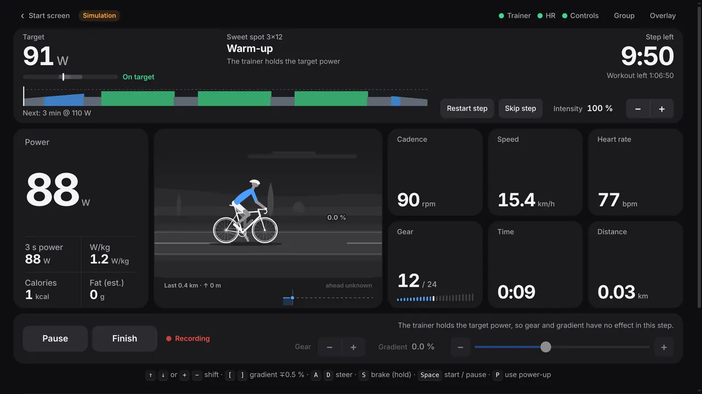
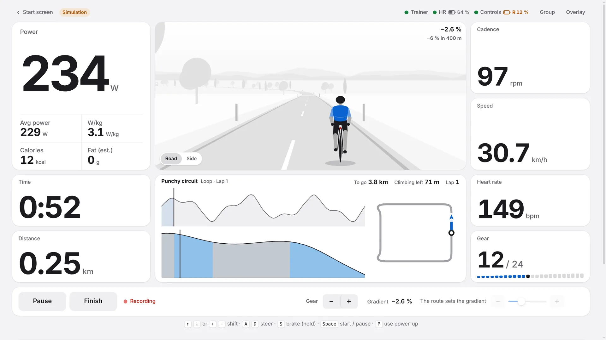
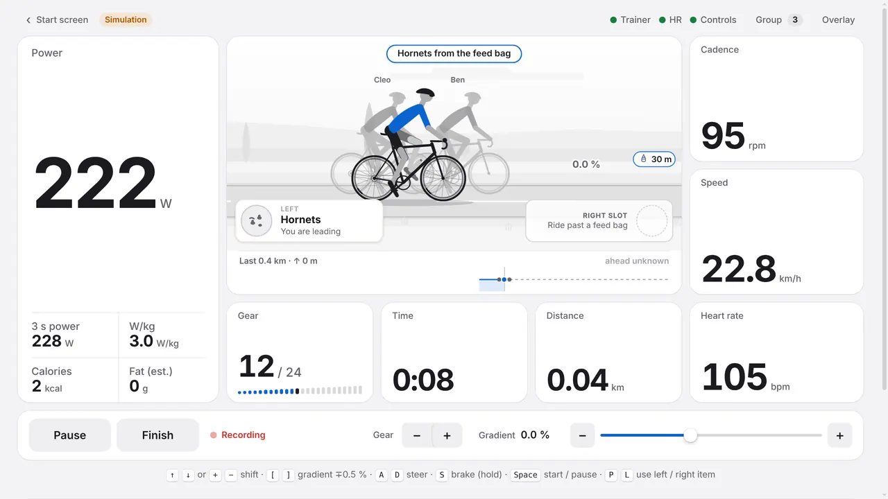

Open source · local-first · early
Indoor cycling without the virtual world.
Your own video, your friends, your data. Freilauf connects your smart trainer, shifts gears in software and puts your numbers over whatever is on your screen. It starts in seconds, needs no account, and keeps every ride on your machine.

What it does
Your numbers over anything
A transparent, always-on-top, click-through overlay with the stats you choose, on top of a film, a race stream or any other app. A hotkey switches it into edit mode to move and resize it.

Structured workouts in ERG mode
The trainer holds the target power while you pedal. Import .zwo files,
pick from a built-in library, or measure your FTP with a 20-minute or a ramp test.

Real routes from GPX
Import a GPX file — from a ride you recorded or a route planner — or pick a built-in route. Its gradient drives the trainer, and the scene shows the road from behind you, bending and climbing as the route does, with a mini map and the profile of what lies ahead. Tested with simulated devices only so far.

Ride together, directly
Up to eight friends in a room, connected peer-to-peer. Share a workout with the group and start it together on a countdown; everyone's targets follow their own FTP.

-
Virtual shifting
24 gears in software, sent to the trainer as standard FTMS simulation parameters — a single-cog bike rides like it has a cassette.
-
Free ride with gradient
Set the slope and feel it. An animated scene shows the climb, an elevation profile and steering.
-
Recording and
.fitexportEvery ride autosaves locally and exports to
.fitfor whatever you use to analyse it. -
In the browser, too
A web version runs from Docker Compose, for example on a home server; group rides work there with no further setup.
Ride with friends
- No setup. Create a ride in the Group tab and send the invite link; friends paste it into theirs and are in.
- No account, no Freilauf server. To find each other, the apps pass a short handshake through public relay servers operated by others — encrypted with a secret only the invite carries. Power, speed and position then go directly from rider to rider.
- Your own server, if you prefer. Running your own signalling server is still possible as an advanced option.
Up to eight riders in a room. Share a workout with the group and start it together on a countdown; everyone's targets follow their own FTP.
Status: this way of connecting is new and not yet verified on real networks — group rides between different homes have not been tried yet. Connections use public STUN servers and no TURN relay, so some networks (mobile carriers, some company or university networks) will not connect.
Your data stays yours
-
No account
Nothing to sign up for, nothing to log into. Install it and ride.
-
No backend, no telemetry
Rides, settings and workouts are files on your machine. No analytics, no crash reporting, no update pings; only a group ride you join talks to the network.
-
Open formats
.fitfor rides,.zwofor workouts, and documented wire protocols for group rides. -
MIT licensed
All of it. Device protocols are reimplemented clean-room, with no code from GPL projects.
Honest status
Freilauf is early and has no published releases yet; you build it from source. Everything on this page works and is tested end to end against simulated devices — about 650 unit tests plus Playwright end-to-end tests of the desktop app and the browser build — but very little has met real hardware.
First real-hardware test, 22 November 2026
Windows 11 · Wahoo KICKR CORE · Zwift Ride smart frame · Bluetooth heart-rate strap
- Pairing worked for the trainer, the frame's controllers and the heart-rate strap.
- All sixteen controller buttons are confirmed on hardware, Z and the right power button included (23 November).
- The brake and steering levers work (one lever per grip, moving both ways); the default assignment of braking and steering was confirmed on the real controllers and can be changed in Settings.
- The overlay over fullscreen video on Windows and macOS is not confirmed yet.
Not tried on real hardware yet: ERG workouts on a trainer, the FTP tests, steering with the controllers, group rides across real networks (only on one machine so far; the new zero-setup connection over public relays not at all), the Docker image build, and macOS in general.
Routes — GPX import, the road view, the route's gradient on the trainer, sharing routes in a group — are tested with simulated devices only; no route has been ridden on real hardware yet.
Community features — points, weekly and monthly totals, friends, challenges and leaderboards synced peer-to-peer — are in the app's Community tab, tested against simulated riders; not yet between real machines.
Installers will be unsigned at first, so Windows and macOS will warn before opening them.
Hardware it targets
- Smart trainers that speak standard Bluetooth FTMS. Tested so far with a Wahoo KICKR CORE.
- Smart-frame handlebar controllers. Works in part with the Zwift Ride smart frame (see above).
- Heart-rate straps using the standard Bluetooth Heart Rate Service.
Freilauf is an independent project and is not affiliated with, endorsed by or sponsored by Wahoo Fitness, Zwift or any other company mentioned. Product names and trademarks belong to their owners and are used only to describe compatibility.
Join in
The most valuable help right now is riding it on real hardware and telling us what happened. You do not need to write code.
-
Test your hardware
Pair your trainer, strap or controllers and open an issue with your system, devices, what happened and the diagnostic log. Controller button captures and trainers other than the one above help most.
-
Protocol notes
Share what your own captures show, with sources and a confidence level, so drivers can be written clean-room.
-
Workouts and design
Original
.zwoworkouts you are happy to publish under MIT, and a careful eye on the app, the overlay and the ride scene. -
Code and, later, translations
The contributing guide has the setup and the few rules. Translations come once the text settles.
Next on the roadmap
Drafting in group rides · Strava upload · a Wi-Fi connection to the trainer · signed installers · an optional always-on relay peer for leaderboards. None of it is built yet.
Documentation
For riders
- Getting started — build or install, first start, pairing, the overlay, simulation mode
- Riding real routes — GPX files, the road view, climb difficulty
- Ride with friends — create a ride, send the link; what the relays see
- The browser version with Docker — on a home server or NAS, with HTTPS
- The diagnostic log — where it is and what is in it
- Reporting a hardware test